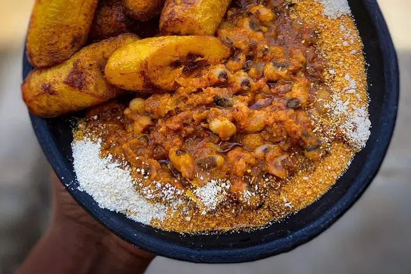

Gari and Beans (Gobe)

Description
Red red is a Ghanaian bean stew served with fried plantains.
This recipe is simple, wholesome, gluten-free and vegan. Use whole beans
and soak them.
If you don't have the patience for that use canned beans, the dish is just
as delicious.
Ingredients
- 1 cup of dry black-eyed peas (180-200g or 1 can of beans)
- 1/4 cup red palm oil
- 1 large onion
- 1 tablespoon tomato paste
- 3 to 4 medium size, ripe tomatoes or 1 can of tomatoes
- 1 inch fresh ginger
- 2 cloves garlic
- 2 scotch bonnet peppers
- 500ml vegetable stock
- salt to taste
- Water for soaking and boiling beans, extra as needed.
Steps
-
Soak the beans in fresh water for about 2 hours or overnight, this makes
the cooking process quicker. You can also soak the beans in hot water
for half an hour before cooking. Cook the beans for 30 to 45 minutes
until soft.
-
Chop the vegetables. Saute the onions until caramelized then add the
tomato paste.
-
Add the garlic, fry about 30 seconds then add the ginger and tomatoes in
and fry until they have cooked down. This should take 5 to 10 minutes.
-
Add the cooked beans and vegetable stock then allow to simmer for half
an hour on low heat. During this time you can prepare the plantains.
-
Take 4 plantains. Peel, slice, season with salt and deep fry or oven
roast.
- Serve the dish garnished with a little gari powder.
Home